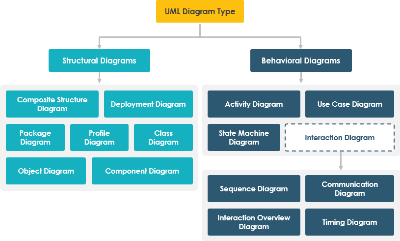

UML, which stands for Unified Modeling Language, is a way to visually represent the architecture, design, and implementation of complex software systems. When you’re writing code, there are thousands of lines in an application, and it’s difficult to keep track of the relationships and hierarchies within a software system. UML diagrams divide that software system into components and subcomponents. A UML diagram is a way to visualize systems and software using Unified Modeling Language (UML). Software engineers create UML diagrams to understand the designs, code architecture, and proposed implementation of complex software systems. UML diagrams are also used to model workflows and business processes UML is not a programming language, it is rather a visual language. Activity diagram is another important behavioral diagram in UML diagram to describe dynamic aspects of the system. Activity diagram is essentially an advanced version of flow chart that modeling the flow from one activity to another activity. Structural UML diagrams Class diagram Package diagram Object diagram Component diagram Composite structure diagram Deployment diagram Behavioral UML diagrams Activity diagram Sequence diagram Use case diagram State diagram Communication diagram Interaction overview diagram Timing diagram
